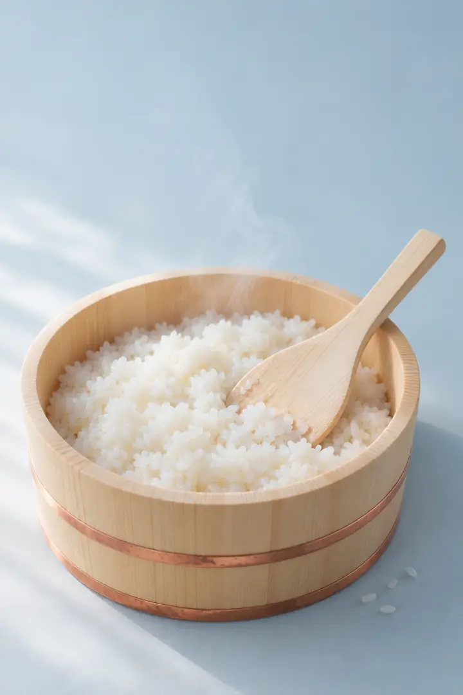
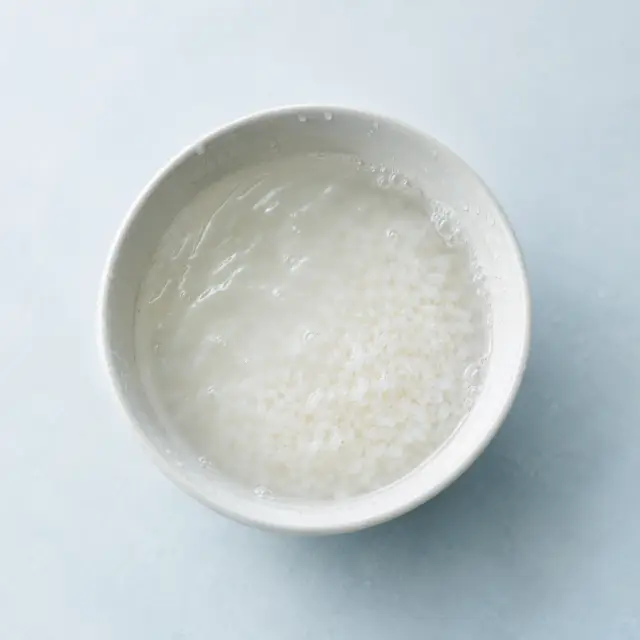
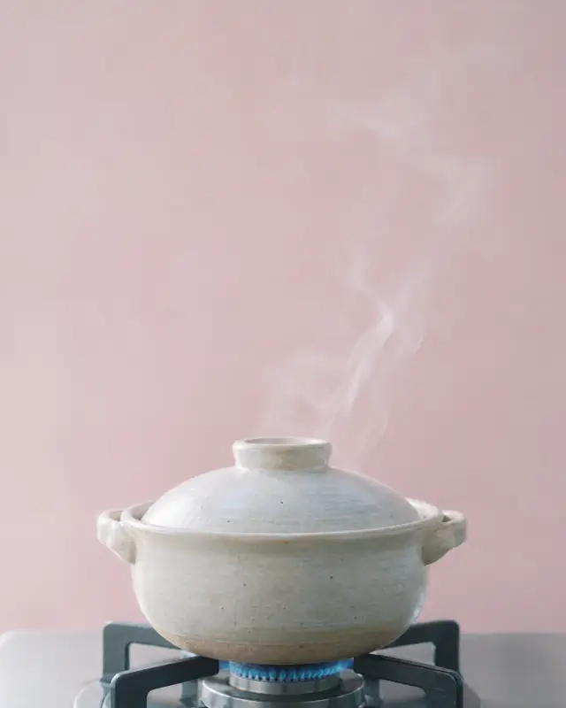
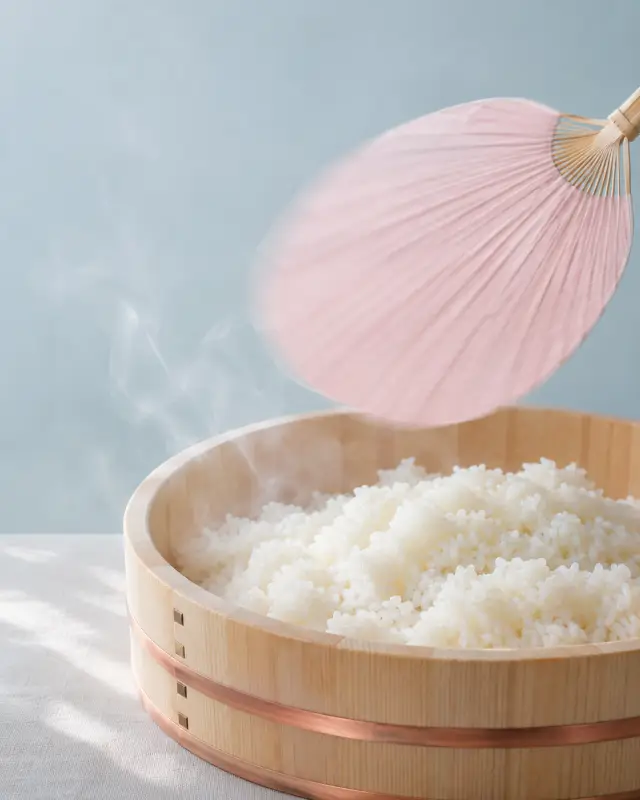
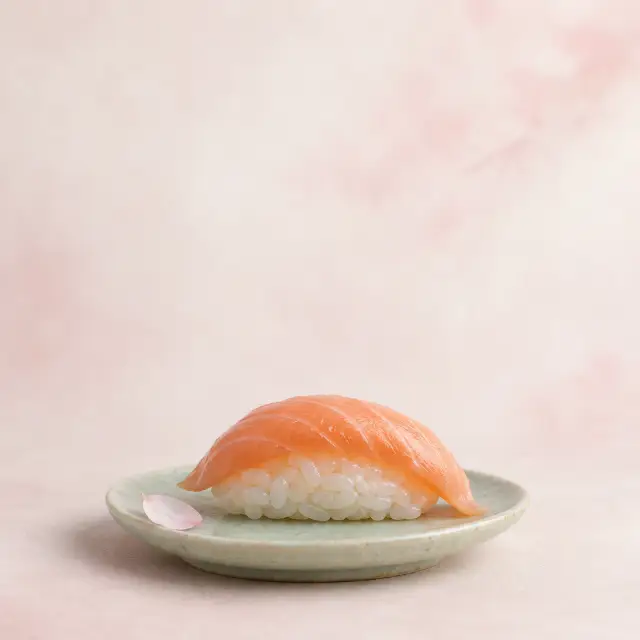

Il giusto mezzo
L'equilibrio tra acido, dolce e salato che trovate nelle ricette giapponesi di casa. Va bene per maki, uramaki e nigiri.
20 ml aceto · 8 g zucchero · 2 g sale
Calcolatore per il sushi
Gratis · senza registrazione
Calcolatore · dosi · ricetta
Il riso per sushi è il riso a chicco tondo condito con aceto, zucchero e sale. Inserite quanto ne preparate, o per quante persone: vi diciamo le dosi, l'acqua, quanti pezzi ci escono e a che ora sarà pronto.
Ogni 100 g di riso crudo

01 — Dosi
Per ogni 100 g di riso crudo servono 20 ml di aceto di riso, 8 g di zucchero e 2 g di sale. Per 300 g, cioè 2 misurini del cuociriso, fanno 60 ml (4 cucchiai), 24 g di zucchero (2 cucchiai) e 6 g di sale (1 cucchiaino): la stessa dose di aceto e zucchero di Just One Cookbook, con un pizzico di sale in più.
| Riso crudo | Acqua | Aceto di riso | Zucchero | Sale | Riso condito |
|---|---|---|---|---|---|
| 150 g1 misurino | 195 ml180 ml cuociriso | 30 ml2 cucchiai | 12 g1 cucchiaio | 3 g½ cucchiaino | ≈ 330 g |
| 300 g2 misurini | 390 ml360 ml cuociriso | 60 ml4 cucchiai | 24 g2 cucchiai | 6 g1 cucchiaino | ≈ 660 g |
| 450 g3 misurini | 585 ml540 ml cuociriso | 90 ml6 cucchiai | 36 g3 cucchiai | 9 g1 cucchiaino e ½ | ≈ 990 g |
| 500 g | 650 ml600 ml cuociriso | 100 ml6 cucchiai + 2 cucchiaini | 40 g3 cucchiai + 1 cucchiaino | 10 g1 cucchiaino e ¾ | ≈ 1,1 kg |
| 1 kg | 1,3 litri1,2 litri cuociriso | 200 mlun bicchiere | 80 g | 20 g | ≈ 2,2 kg |
L'equilibrio tra acido, dolce e salato che trovate nelle ricette giapponesi di casa. Va bene per maki, uramaki e nigiri.
20 ml aceto · 8 g zucchero · 2 g sale
Nella zona di Osaka la shari è più dolce. Ideale per maki, inari, chirashi e per chi a tavola ha meno di 12 anni.
20 ml aceto · 13 g zucchero · 2,5 g sale
Meno zucchero e più sale, come nei sushi bar di Tokyo: lascia parlare il pesce. Perfetto per nigiri e sashimi sul riso.
22 ml aceto · 4 g zucchero · 3 g sale
02 — Ricetta
Si lava, si lascia in ammollo 30 minuti, si cuoce coperto per circa 20 minuti, si lascia riposare 10 minuti senza aprire e si condisce ancora caldo, tagliandolo con la spatola mentre qualcuno fa vento. In tutto servono circa 75 minuti, di cui solo 15 di lavoro vero: il resto lo fa il vapore.



Mettete il riso in una ciotola, copritelo d'acqua fredda, strofinate i chicchi con le mani per 10-15 secondi e buttate l'acqua. Ripetete 3 o 4 volte, finché l'acqua è quasi trasparente.
Il truccoLa prima acqua buttatela subito: il riso secco beve tutto quello che trova, compresa l'acqua torbida.
Scolate il riso e mettetelo nella pentola (o nel cestello del cuociriso) con l'acqua del calcolatore. Lasciatelo lì 30 minuti: i chicchi si bagnano fino al cuore e poi cuociono tutti uguali.
Il truccoSe avete un quadrato di alga kombu da 5 g, mettetelo adesso. Pulitelo con un panno umido, senza lavarlo: la polverina bianca è sapore.
Coperchio, fiamma media fino al bollore (5-8 minuti), poi fiamma al minimo per 12 minuti. Col cuociriso usate il programma sushi, o quello del riso bianco, e non pensateci più.
Il truccoNon alzate il coperchio: se avete abbassato la fiamma non si brucia niente. Ogni sbirciata fa uscire il vapore che sta cuocendo il riso al posto vostro.
Spegnete il fuoco e lasciate il coperchio chiuso altri 10 minuti. Il riso finisce di cuocere nel suo vapore e l'umidità si distribuisce, dal fondo fino in cima.
Il truccoÈ il momento di preparare il condimento e bagnare la ciotola. Sì, il coperchio resta ancora chiuso.
Scaldate aceto, zucchero e sale per 1 minuto, finché si sciolgono, senza far bollire. Rovesciate il riso in una ciotola larga di legno o vetro, inumidita, versate il condimento sulla spatola e tagliate il riso di taglio, girandolo piano, mentre qualcuno fa vento col ventaglio.
Il truccoLa spatola taglia, non mescola: state facendo sushi, non risotto. E se il ventaglio non c'è, il cartone della pizza fa lo stesso lavoro.
Il riso è pronto quando è lucido e tiepido come la vostra mano, più o meno alla temperatura del corpo. Copritelo con un panno umido e usatelo entro qualche ora, con le mani bagnate in acqua e un goccio d'aceto.
Il truccoIn frigo no: in un'ora diventa un sasso. Se in cucina fa caldo, tenetelo nell'angolo più fresco, sempre coperto.
03 — Porzioni

Contate 100 g di riso crudo a persona se mangiate solo sushi, 75 g se ci sono altri piatti e 150 g per chi ha fame vera. 100 g di riso crudo diventano circa 220 g di riso condito: abbastanza per 11 nigiri, oppure per 2 hosomaki e mezzo, oppure per 2 uramaki.
| Pezzo | Riso condito | Riso crudo | Alga nori |
|---|---|---|---|
| Nigiri | 20 g | ≈ 9 g | – |
| Hosomaki6 pezzi | 80 g | ≈ 36 g | ½ foglio |
| Uramaki8 pezzi | 110 g | ≈ 50 g | ½ foglio |
| Futomaki8 pezzi | 250 g | ≈ 114 g | 1 foglio |
Per 4 persone, quindi, 400 g di riso crudo: circa 880 g di riso condito, cioè 44 nigiri o 11 hosomaki. Se fate una serata di temaki, dove ognuno si arrotola il suo, tenetevi larghi: il riso finisce sempre prima dei discorsi.
04 — Varietà
Serve un riso japonica a chicco tondo e corto, che dopo la cottura resta compatto e lucido. Il migliore è il riso giapponese per sushi, come il Koshihikari; in Italia vanno bene anche l'Originario e il Selenio. Basmati, jasmine, parboiled e integrale non stanno insieme: niente da fare.
Sulla confezione cercate «riso per sushi», «japonica» o «chicco tondo». Il Carnaroli e l'Arborio sono fatti per il risotto: rilasciano tanto amido e tengono la cottura, due cose che nel sushi non servono. Il riso giapponese costa di più, ma 1 kg basta per circa 20 porzioni.
05 — L'aceto
Sì, se in dispensa non c'è altro. L'aceto di riso è più delicato: di solito ha un'acidità intorno al 4-4,5%, mentre l'aceto di mele e quello di vino arrivano al 5-6%. Usatene tre quarti della dose e completate con acqua; lasciate stare il balsamico, che colora il riso e lo fa sapere di insalata.
Lo dice anche l'autrice di Una Giapponese in Cucina, che per il condimento accetta aceto di riso, di cereali o di mele. La percentuale di acidità è scritta in etichetta: controllatela, perché cambia da marca a marca.
Il condimento per sushi pronto (sushi-zu) è un'altra storia: contiene già zucchero e sale, quindi si usa nella stessa quantità dell'aceto, 20 ml ogni 100 g di riso crudo, e basta. Nel calcolatore scegliete «Condimento pronto».
06 — Errori
I più comuni sono 4: troppa acqua, il coperchio alzato durante la cottura, il condimento versato sul riso già freddo e il riso mescolato come un risotto. Il risultato è sempre lo stesso, una pappa collosa oppure chicchi duri e slegati. Ecco come evitarli, uno per uno.
Il riso per sushi vuole meno acqua del solito, perché dopo riceve anche il condimento. Meglio un filo asciutto che una pappa: rispettate le dosi.
A ogni sbirciata esce vapore e il riso resta crudo in cima e scotto in fondo. Fidatevi del timer, non della curiosità.
Il riso caldo assorbe il condimento, quello freddo no: l'aceto resta in superficie e il riso diventa bagnato e aspro. Condite appena finisce il riposo.
Mescolare e schiacciare rompe i chicchi e libera amido: avete appena fatto la colla. Solo tagli dal fondo verso l'alto.
Basmati, jasmine e parboiled hanno chicchi lunghi che non si attaccano tra loro: i rotoli si aprono al primo morso, di solito sulla tovaglia buona.
L'aceto attacca l'alluminio e lascia un sapore metallico. L'acciaio regge ma resta caldo a lungo: meglio legno, vetro o ceramica.
Il freddo fa indurire l'amido: il riso diventa duro, opaco e si sbriciola. Si usa a temperatura ambiente, coperto, il giorno stesso.
07 — Trucchi
Un pezzetto di alga kombu in cottura, il condimento scaldato finché lo zucchero si scioglie, una ciotola di legno inumidita e mani bagnate in acqua e aceto. Sono piccole cose che si fanno in 2 minuti e che nei sushi bar giapponesi si fanno da sempre.
5 g di alga kombu nell'acqua di cottura danno al riso un sapore più rotondo. Si toglie quando il riso è cotto.
Scaldato 1 minuto, lo zucchero si scioglie del tutto e il condimento si spande meglio. Senza farlo bollire, o l'aceto se ne va in profumo.
Passatele con un panno umido: il riso non si attacca e il legno beve l'umidità in più. Il recipiente tradizionale si chiama hangiri.
Per nigiri e rotoli bagnatevi le mani in acqua con un goccio d'aceto: il riso non si appiccica alle dita e i pezzi vengono lisci.
Il vento raffredda in fretta e rende i chicchi lucidi. Ventaglio, cartone della pizza, un coperchio: va bene tutto, basta che qualcuno sventoli.
Il riso condito avanzato diventa una chirashi: una ciotola con pesce, avocado e sesamo sopra. Mettetelo in frigo subito e mangiatelo l'indomani.
08 — Conservazione
Coperto da un panno umido resta buono a temperatura ambiente per qualche ora, giusto il tempo di preparare il sushi. Se avanza, raffreddatelo in fretta, entro un'ora, mettetelo in frigo e mangiatelo entro 24 ore, come raccomanda la Food Standards Scotland. Nel congelatore, in porzioni piccole, dura fino a 1 mese.
Il motivo è un batterio, il Bacillus cereus: le sue spore sopravvivono alla cottura e, se il riso resta a lungo a temperatura ambiente, producono una tossina che il calore non elimina. L'aceto aiuta, ma non fa miracoli. Il riso congelato si scongela in frigo e si scalda una volta sola, poi si lascia intiepidire prima di usarlo.
09 — Domande
Quanto aceto per 500 g, quanta acqua, se va lavato, se si può fare il giorno prima, a che temperatura usarlo e quanto riso per 4 persone: ecco le risposte brevi alle domande che arrivano più spesso.
Per 500 g di riso crudo servono 100 ml di aceto di riso (6 cucchiai e 2 cucchiaini), 40 g di zucchero e 10 g di sale fino, più 650 ml di acqua se cuocete in pentola. Con il condimento per sushi già pronto bastano 100 ml, senza aggiungere zucchero né sale.
In pentola usate 1,3 volte il peso del riso, per esempio 390 ml per 300 g; nel cuociriso 1,2 volte, cioè lo stesso volume del riso crudo. È meno acqua del riso normale perché dopo arriva anche il condimento: con troppa acqua il riso diventa una pappa.
Sì. Il lavaggio toglie l'amido in superficie, che renderebbe il riso colloso come la colla delle elementari. Strofinatelo con le mani e cambiate l'acqua 3 o 4 volte, finché è quasi trasparente: bastano 5 minuti. Non serve che diventi limpida come acqua di sorgente.
Meglio di no. In frigorifero il riso diventa duro e opaco, e a temperatura ambiente dopo qualche ora non è più sicuro. Preparatelo al massimo qualche ora prima, coperto da un panno umido; se avanza, mettetelo in frigo entro un'ora e mangiatelo entro 24 ore.
Tiepido, più o meno alla temperatura del corpo, intorno ai 36-37 °C: toccandolo non deve sembrarvi né caldo né freddo. Se è caldo scalda il pesce e si attacca alle mani, se è freddo di frigo è duro e non si compatta. Tenetelo coperto con un panno umido mentre lavorate.
Per 4 persone che mangiano solo sushi calcolate 400 g di riso crudo: diventano circa 880 g di riso condito, abbastanza per 44 nigiri oppure 11 hosomaki. Servono 80 ml di aceto di riso, 32 g di zucchero, 8 g di sale e 520 ml di acqua in pentola. Se ci sono anche altri piatti, bastano 300 g.
Sì, è la scorciatoia più comoda: il condimento pronto, che in Giappone si chiama sushi-zu, contiene già zucchero e sale. Usatene 20 ml ogni 100 g di riso crudo, cioè 60 ml per 300 g, e non aggiungete altro. Date comunque un'occhiata all'etichetta, perché ogni marca ha la sua dose.
Sì, con un riso a chicco tondo della famiglia japonica, come l'Originario o il Selenio, parenti stretti del riso giapponese. Evitate invece basmati, jasmine, parboiled e integrale: i chicchi non restano attaccati tra loro e i rotoli si sfaldano al primo morso.
10 — Fonti
Le dosi sono una media ragionata delle ricette di cuochi e produttori: Just One Cookbook, Mizkan, Kikkoman Italia e Una Giapponese in Cucina. Le regole di conservazione vengono dalla Food Standards Scotland. Ho controllato tutte le pagine il 3 novembre 2026 e, dove le fonti non erano d'accordo, ho scelto il valore di mezzo.